ECS + Load Balancer + Node + Terraform
- We have a node site that displays the metadata task
- Create an docker image optimized for production and host it on Docker hub
- Use aws cli to create a load balancer
- Use ecs-cli to put the site online
- Scale up the number of instances behind the load balancer
- Use Terraform to do the exact same thing
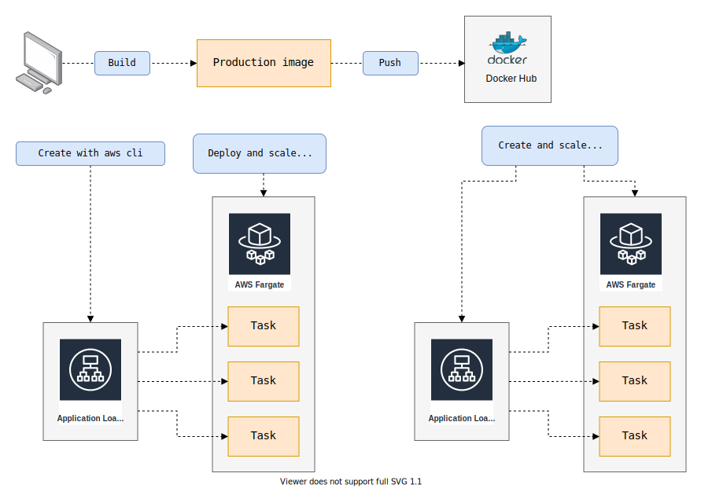
Install the project
Get the code from this github repository :
# download the code
$ git clone \
--depth 1 \
https://github.com/jeromedecoster/ecs-lb-node-terraform.git \
/tmp/aws
# cd
$ cd /tmp/aws
Run the site locally
Let’s start by seeing the site locally.
The site uses express and ejs.
{
"dependencies": {
"axios": "^0.19.2",
"ejs": "^3.1.3",
"express": "^4.17.1"
}
}
We install the packages :
$ npm install
The Makefile allows you to run the development version :
dev: # local development without docker
NODE_ENV=development PORT=3000 node .
We launch the development version :
$ make dev
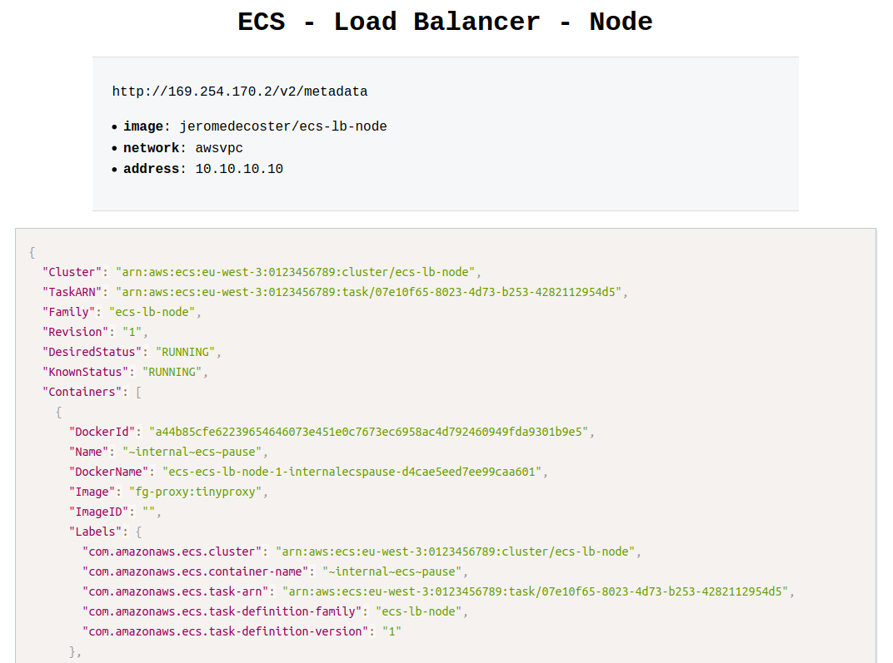
The development site displays a mock of metadata task returned from the special address http://169.254.170.2/v2/metadata.
This is a link-local address.
We can see in particular the following informations :
- Image : The image for the container.
- Networks : The network information for the container, such as the network mode and IP address.
{
"Image": "jeromedecoster/ecs-lb-node",
"//": "...",
"Networks": [
{
"NetworkMode": "awsvpc",
"IPv4Addresses": [
"10.10.10.10"
]
}
]
}
Hosting the production image on the docker hub
You can modify some variables in the make.sh file to customize your tests :
#
# variables
#
# AWS variables
PROFILE=default
REGION=eu-west-3
# Docker Hub image
DOCKER_IMAGE=jeromedecoster/ecs-lb-node
# project name
NAME=ecs-lb-node
We build the production image :
$ make build
This command does this :
$ VERSION=$(jq --raw-output '.version' package.json)
$ docker image build \
--tag $DOCKER_IMAGE:latest \
--tag $DOCKER_IMAGE:$VERSION \
.
The Dockerfile is simple :
FROM node:14.3-slim AS build
WORKDIR /app
ADD package.json .
RUN npm install
FROM node:14.3-slim
ENV NODE_ENV production
ENV PORT 80
WORKDIR /app
COPY --from=build /app .
ADD . .
EXPOSE 80
CMD ["node", "index.js"]
We push this image to docker hub :
$ make push
This command does this :
$ VERSION=$(jq --raw-output '.version' package.json)
$ docker push $DOCKER_IMAGE:latest
$ docker push $DOCKER_IMAGE:$VERSION
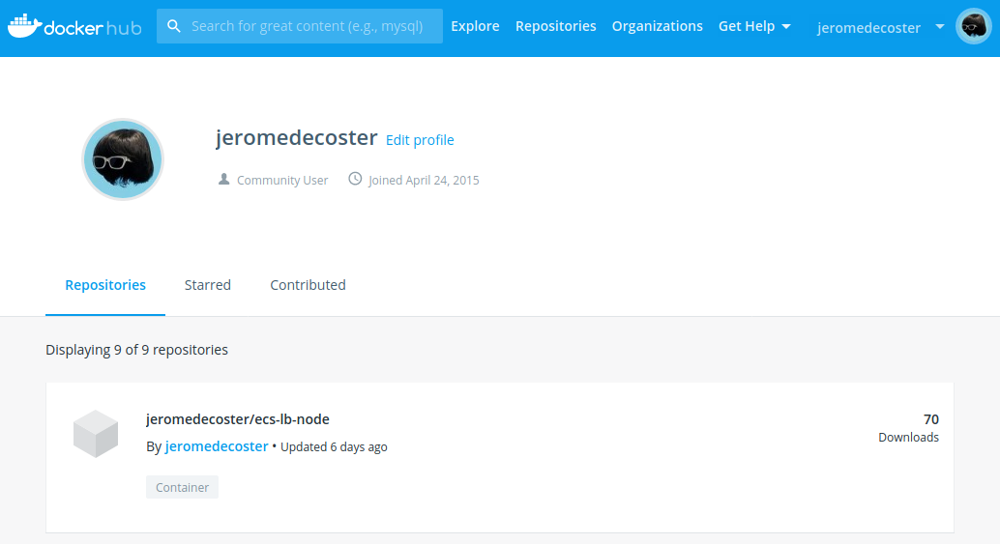
Use ecs-cli to start the image in ECS FARGATE
We create the cluster and the load balancer with this simple command :
$ make ecs-create
This simple command performs many tasks within the make.sh file.
Let’s look at some parts of the code executed :
- Configuration of
ecs-cliwith ecs-cli configure. - Creation of the cluster avec ecs-cli up.
$ ecs-cli configure \
--cluster $NAME \
--default-launch-type FARGATE \
--config-name $NAME \
--region $REGION
$ ecs-cli up \
--cluster-config $NAME \
--aws-profile $PROFILE \
--region $REGION \
--tags Name=$NAME
- Opening of
port 80in the security group with ec2 authorize-security-group-ingress. - Load balancer creation with elbv2 create-load-balancer.
$ aws ec2 authorize-security-group-ingress \
--group-id $SG \
--protocol tcp \
--port 80 \
--cidr 0.0.0.0/0 \
--profile $PROFILE \
--region $REGION \
2>/dev/null
$ aws elbv2 create-load-balancer \
--name $NAME \
--type application \
--subnets $SUBNETS \
--profile $PROFILE \
--region $REGION \
1>/dev/null
- ECS service creation with ecs-cli compose service up.
$ ecs-cli compose \
--file docker-compose.aws.yml \
--project-name $NAME \
service up \
--create-log-groups \
--cluster-config $NAME \
--target-group-arn "$TG_ARN" \
--container-name site \
--container-port 80 \
--aws-profile $PROFILE \
--region $REGION
We have the URL of our load balancer :
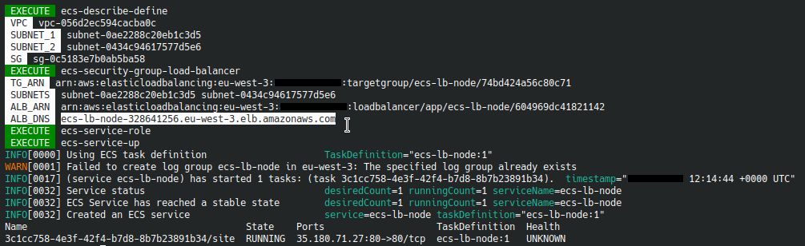
We display this URL in our browser we see the private URL :
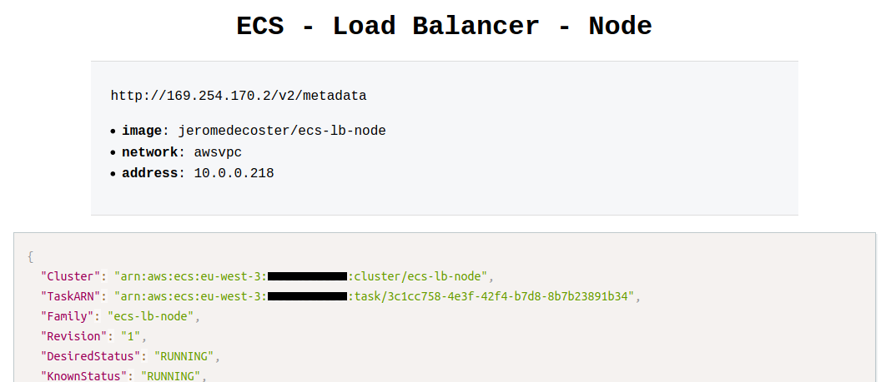
Service scaling
We go from 1 container to 3 containers :
$ make ecs-scale-up
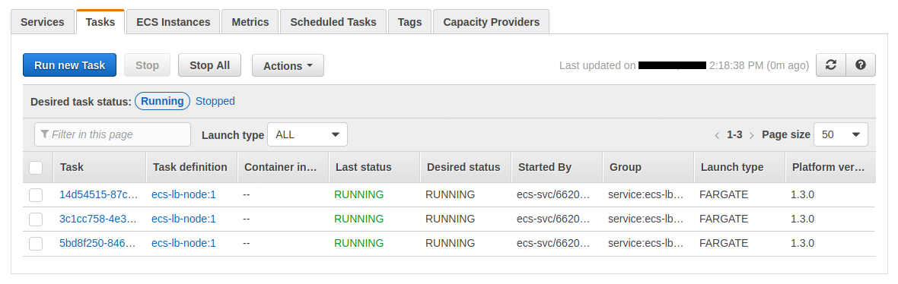
Once the scaling is complete, if we reload our site multiple times, we see our different private IP addresses :
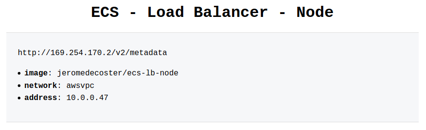
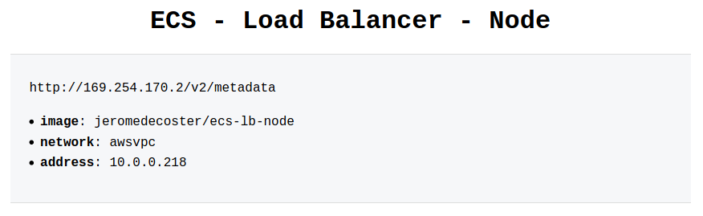
We can change the scale again to go back to 1 container :
$ make ecs-scale-down
But beware, unregister targets in the load balancer takes several minutes :
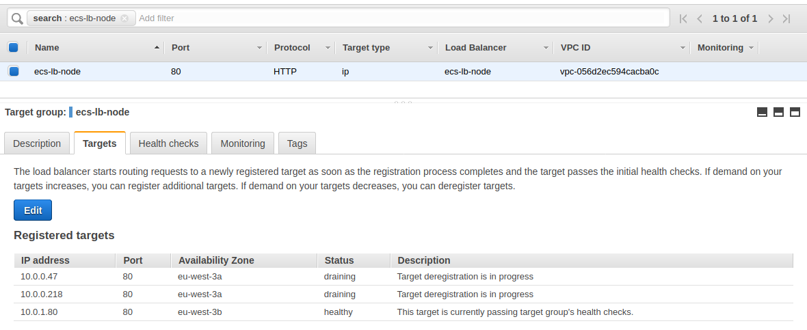
The demonstration is over, we can destroy our resources :
$ make ecs-destroy
Using Terraform
The advantage of ecs-cli is to use the docker-compose.yml file transparently.
ecs-cli also uses CloudFormation in a hidden way to create and manage resources.
With ecs-cli there is therefore little to do, with the exception of the creation of the Load Balancer, to transform our local docker-compose service to an online ECS service.
But If we want to use Terraform, we have to describe everything. And it takes much longer !
Let’s take a look at some excerpts from Terraform files.
Creation of the VPC, subnets, Internet gateway and routing table in vpc.tf :
resource aws_vpc vpc {
cidr_block = "10.0.0.0/16"
enable_dns_hostnames = true
tags = {
Name = local.project_name
}
}
resource aws_subnet subnet_1 {
vpc_id = aws_vpc.vpc.id
cidr_block = "10.0.0.0/24"
availability_zone = "${var.region}a"
tags = {
Name = local.project_name
}
}
# ...
Creation of the load balancer, target group and listener in alb.tf :
resource aws_alb alb {
name = local.project_name
load_balancer_type = "application"
subnets = [aws_subnet.subnet_1.id, aws_subnet.subnet_2.id]
security_groups = [aws_security_group.alb.id]
tags = {
Name = local.project_name
}
}
# ...
Creation of the cluster, the task definition and the service in ecs.tf :
resource aws_ecs_task_definition task_definition {
family = local.project_name
container_definitions = <<DEFINITION
[{
"name": "site",
"image": "jeromedecoster/ecs-lb-node",
"cpu": 0,
"essential": true,
"networkMode": "awsvpc",
"portMappings": [
{
"containerPort": 80,
"hostPort": 80,
"protocol": "tcp"
}
],
"privileged": false,
"readonlyRootFilesystem": false,
"logConfiguration": {
"logDriver": "awslogs",
"options": {
"awslogs-group": "${aws_cloudwatch_log_group.log_group.name}",
"awslogs-region": "${var.region}",
"awslogs-stream-prefix": "site"
}
}
}]
DEFINITION
execution_role_arn = aws_iam_role.ecs_task_execution_role.arn
network_mode = "awsvpc"
requires_compatibilities = ["FARGATE"]
cpu = 256
memory = 512
}
resource aws_ecs_service ecs_service {
name = local.project_name
cluster = aws_ecs_cluster.ecs_cluster.id
task_definition = aws_ecs_task_definition.task_definition.arn
launch_type = "FARGATE"
desired_count = var.desired_count
scheduling_strategy = "REPLICA"
network_configuration {
subnets = [aws_subnet.subnet_1.id, aws_subnet.subnet_2.id]
security_groups = [aws_security_group.ecs_tasks.id, aws_security_group.alb.id]
assign_public_ip = true
}
load_balancer {
target_group_arn = aws_alb_target_group.alb_target_group.arn
container_name = "site"
container_port = 80
}
depends_on = [aws_alb_listener.alb_listener]
}
To initialize Terraform we use this command :
$ make tf-init
To build the infrastructure, the cluster and the service we simply execute command :
$ make tf-apply
We have some information in the terminal :
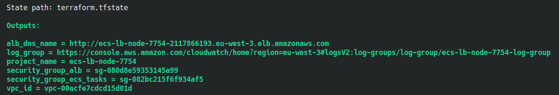
We use the DNS name URL of the load balancer in our browser :
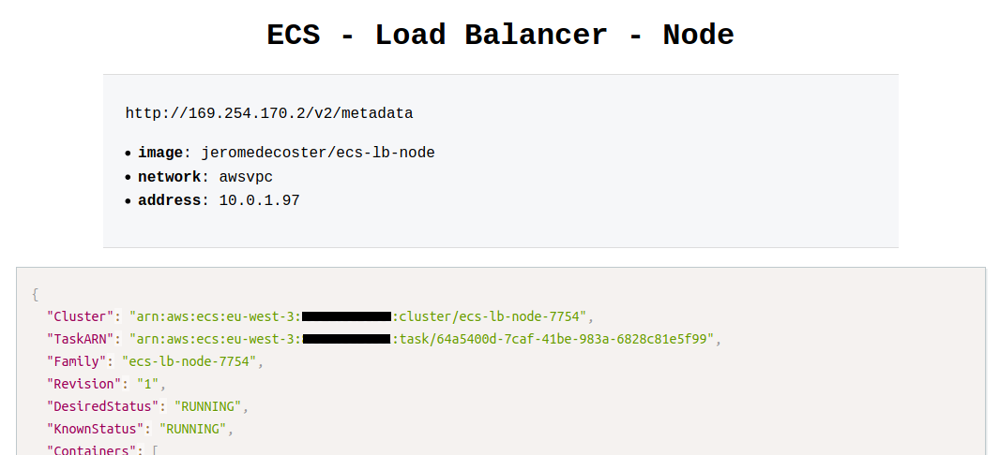
We use scaling to go to 3 instances :
$ make tf-scale-up
The executed shell code is very simple :
$ export TF_VAR_desired_count=3
$ tf-apply
New tasks are provisioning :
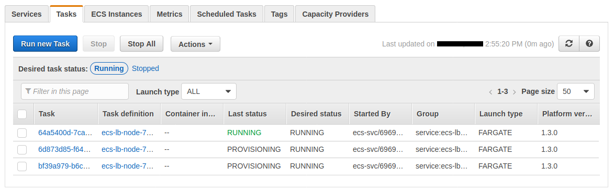
The target group registers the new instances :
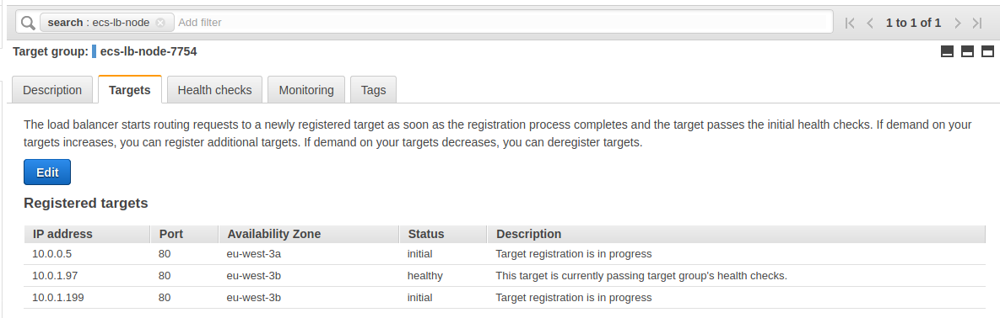
Everything is ready :
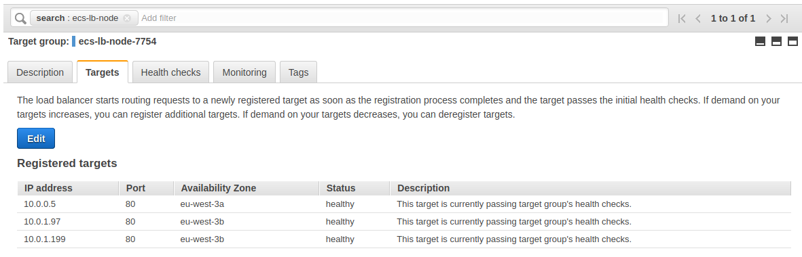
We see our 3 instances behind our load balancer if we reload our browser several times :
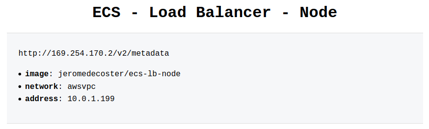
We can go back to 1 container :
$ make tf-scale-down
Unregistering targets in the load balancer takes several minutes :
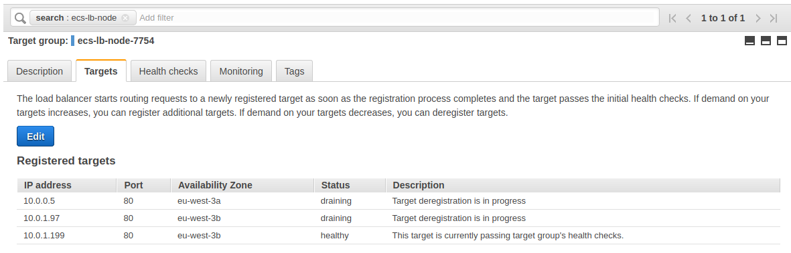
The demonstration is over, we can destroy our resources :
$ make tf-destroy